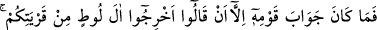

onu yapması, başkasının yapmasından daha çirkindir. Bu yüzden ki: “Câhilin âbid ve
âlimin harama tecâvüz edici olması, büyük fesâddır” denilmiştir.
Ya da âyetteki “görme” gözün görmesidir. Yâni siz, bu kötü fiili işlerken bazınız
bazınızı gözlerinizle göre göre…, demektir. Çünkü onlar bu fiili açıktan yapıyorlar ve
gizlenmiyorlardı. Bu ise daha çirkin ve hayâsızca bir durum oluyordu.
55. (Bu ilâhî ikazdan sonra hâlâ) siz, ille de kadınları bırakıp şehvetle erkeklere
yaklaşacak mısınız? Doğrusu siz, câhillik edegelen bir kavimsiniz!
“(Bu ilâhî ikazdan sonra hâlâ) siz, ille de kadınları bırakıp” şehvetin mahalli olan
kadınları bir tarafa bıraktığınız halde “şehvetle erkeklere yaklaşacak mısınız?”
Bu âyette Lût (a.s.)’ın kavminin niçin hayâsızlık yaptığı açıklanmakta; çirkinliğine
delâlet etmek, cinsi münâsebetteki hikmetin arzuyu gidermek değil nesil talebi olduğuna
dikkat çekmek için yaptıkları fiil onların şehvetlerinin esiri olmalarına bağlanmaktadır.
Şehvetin aslı nefsin istediğine meyletmesi ve onu arzu etmesidir.
“Doğrusu siz, câhillik edegelen bir kavimsiniz!” Çünkü ilminizin gereği ile amel
etmiyorsunuz. Çünkü ilminin ve basîretinin gereğine göre hareket etmeyen kimse,
câhilce fiiller işler. O ve câhil eşittir.
“__WORD__ (siz, câhillik edegelen)” ifâdesi, kavmin sıfatıdır. Bu sıfatı taşıyan (mevsuf),
muhâtab mânâsında olduğu için de muhâtab siygasıyla gelmiştir.
56. Kavminin cevabı sadece: “Lût âilesini memleketinizden çıkarın; çünkü onlar
(bizim yaptıklarımızdan) uzak kalmak isteyen insanlarmış!” demelerinden ibaret
oldu.
“Kavminin cevabı sadece:” birbirlerine şöyle demek oldu: “Lût âilesini” Lût’u ve
ona tâbi olanları “memleketinizden” Sodom’dan “çıkarın; çünkü onlar (bizim
yaptıklarımızdan) uzak kalmak isteyen” yaptıklarımızdan kaçınan ya da pisliklerden
temiz ve uzak duran, bizim fiillerimizi pis sayan “insanlarmış!”
“__WORD__ kelimesi, “__WORD__ kelimesinin çoğulu ve “__WORD__ kelimesinin hafifletilmişidir.
İbn Abbâs (r.anhümâ)’dan rivâyete göre onlar bu sözü alay yollu söylemiştir. Bu